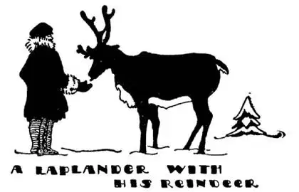

42
Where the Sun Shines All Night
极昼之地

IN “Through the Looking-Glass” the story of “The Walrus and the Carpenter” starts this way:
The sun was shining on the sea,
Shining with all his might: …
And this was odd, because it was
The middle of the night.
Sun shining at midnight! You probably think this can’t be true and is only a joke, but it is true up at the top of Norway and Sweden. At the top of Norway is a great rock sticking out into the Arctic Ocean. It is called the North Cape, and although there is no town there, people make long journeys from other lands to the North Cape to see the sun shining on the sea in the middle of the night.
You have always been told that the sun rises in the east and sets in the west, and probably you have never seen it do anything else; but the boys and girls in the north of Norway and Sweden know differently, for up there the sun doesn’t rise in the east and set in the west. It goes completely round the house low down in the sky near the ground and keeps on going round and round this way every day for six months and in that time never sets—is never out of sight—there is always daylight for six months. But the sun gradually gets closer and closer to the ground as it goes round the sky and then at last sinks out of sight below the edge of the World, and there it stays out of sight for another six months and for six months it is night.
How can such a thing be? Isn’t it the same sun we see here?
Yes, of course it’s the same sun; there’s only one sun. But we are living on the side of the World and we can’t see the sun when it goes round to the other side of the World. If, however, we climb up the side of the World to the top where the North Cape is, we can see the sun go all the way round. It is as if you lived on the side of a hill and some one went round the hill and came back on the other side. You could see him go off one way and come back the other way, but you couldn’t see him when he was on the other side. If, however, you went to the top of the hill you could see him all the way round.
The land at the top of the World is often called “The Land of the Midnight Sun,” because the sun shines at midnight. It might just as well be called “The Land of the 10-o’clock-at-night Sun,” for the sun shines at every hour of the night as well as every hour of the day. And it also might be called “The Land of the Midday Night,” for when the sun is going round out of sight below the edge of the World it is dark every hour of the day as well as of the night.

拉普人和驯鹿
It’s Santa Claus Land
圣诞老人之地
This “Land of the Midnight Sun” is the land of the Reindeer—Santa Claus Land. In this land of snow and ice very little grows except moss, and the Reindeer is the only animal that can live on moss. The people that live there are called Lapps. They look something like Eskimos, and both look like the Chinese, so we think they probably were Chinese long, long ago. The Lapps and the Reindeer live together in the same hut—the Reindeer is like a horse, a cow, a sheep, and a dog all in one. The Lapp harnesses the Reindeer to his sled, he gets milk from her, he kills her and eats the meat, and then he uses her skin to make himself and his family fur coats and tents.
But the people who live in the rest of Norway and Sweden are the same kind of people as you and I, only some of them are much smarter and better educated. I know a Swede who speaks twelve languages, I know of a Swede who invented a way of separating cream from milk without skimming it, and I know of two Swedish boys who invented a machine for making ice with heat.
Sweden and Norway used to be one country with one king, but now they are separate countries and each has a separate king and a separate capital.
In the geography your grandfather used, the capital of Norway was named Christiania, but the name was changed. You will find it on the map way down the throat of the whale. It is now called Oslo. The capital of Sweden begins with an “S,” as Sweden does. It is Stockholm. Both Oslo and Stockholm are on the water, but they are not touched by the Gulf Stream, so the water in their harbors is frozen over nearly all winter and ships cannot go and come at that time. Stockholm is often called the Venice of the North, because like Venice it has many streets of water.
Mary and John are our commonest names. The Scandinavians like some names for their children better than others. Ole is one name they like especially well. Hans is another, and Eric and Peter are others. We sometimes make a family name by adding “son” to John to make Johnson. The Scandinavians add “son” or “sen” to their names to make family names, as Ericson , Oleson , Hansen , Petersen , Nansen , Amundsen. If you were in Wisconsin or Minnesota and looked in the telephone book you would find thousands of such names. That is because many, many Swedes and Norwegians have come to our country and settled in that part of our country which is most like their country.
Many common Norse words look like English words misspelled:
lamp is lampe
house is hus
cow is ko
They haven’t copied us, we have copied them, for long ago Norse sailors settled in England, and after thousands of years we still use some Norse words changed very little.
Long years ago the men of Scandinavia were fierce fighters, who drank a strong liquor called “mead” and used the skulls of their enemies for cups. They believed in fairy-tale gods and goddesses. Thor, they believed, was a god who made the thunder and lightning. Tiu was the god of war. So they named some of the days of the week after their gods; Tiu’s day, Thor’s day, Woden’s day, Fria’s day. Strange to say, four of the seven days of our week are still named after these Scandinavian gods, for those wild people who believed in those gods are the great-great-grandfathers of many of us. Tuesday is Tiu’s day, Thursday is Thor’s day, Friday is Fria’s day and Wednesday is Woden’s day—that’s why we still have a “d” in Wednesday which we might forget in spelling, as we do not sound it now. Most people have forgotten that our week-days are named after heathen gods, but some think that we should not use such heathen names, so they use numbers instead of names for the days of the week, as in Bible times.
Dynamite, you know, is something used to blow up things. It was invented by a man who lived in Sweden some years ago. When he died he left a lot of money and said that the interest from this money was to be given every year to the men or women who, no matter in what country they lived, had done the most for the World during that year. So each year judges go over all the things that have been done and choose those men or women who have done the most for the good of the World and give them the money. This man was named Nobel and the money is known as the Nobel Prize. Two of our Presidents—Theodore Roosevelt and Woodrow Wilson—won the Nobel Prize for Peace and so did an American Negro, Ralph Bunche. You yourself could win the Nobel Prize if you ever did something big enough and fine enough. Do you think you ever will?
【中文阅读】
在《镜中奇缘》这部童话小说里，“海象与木匠”故事的开头是这样的：
太阳照射在海面上，
阳光灿烂……
这很奇怪，因为
现在是午夜。
午夜太阳还在照射！你很可能认为，这不是真的，只不过是个玩笑吧。但是，在挪威和瑞典的最北端真的就是这样的。在挪威的最北端，有一块巨大的岩石伸出去，伸进北冰洋，叫做“北角”。尽管那儿没有城镇，人们还是从世界各地长途跋涉来到北角，观看午夜太阳照射海面的情景。
别人总是告诉你，太阳从东边升起，在西边落下。而且你很可能从来没有见过与此不同的情况。但是，挪威和瑞典北部的孩子们所知道的就和我们不一样，因为在那儿，太阳并不是东升西落。太阳完全是围着房子转，始终低低地挂在空中，离地面很近，就这样日复一日，在天空持续转六个月。在这段时间里没有日落——太阳总是在你视力范围之内——连续六个月都是白天。但是，随着太阳在空中转动，它离地面越来越近，最后，终于落下去，离开你的视野，落在世界边缘以下。这样，连续六个月你看不到太阳，连续六个月都是黑夜。
怎么会发生这样的事呢？难道那边的太阳和我们天天看到的太阳不是同一个吗？
是的，当然是同一个太阳，只有一个太阳。但是，我们生活在世界的这一边，当太阳转到世界的另一边的时候，我们就看不见它了。然而，如果我们往北来到北角所在的地球顶点，我们就会看到太阳始终都在那里转动。这就好像是你住在山的这边，看见有个人绕过这座山再从另一边回来。你可以看见他从这边离开，也可以看见他从另一边回来；可是当他在山的背面的时候，你就看不见他了。但是，如果你来到山顶，你就总是都能看到他。
世界之巅常常被称作“午夜太阳之地”，因为午夜时分太阳依然在天空；也不妨叫做“夜晚10点太阳之地”，因为太阳在晚上的每个小时都在照着，如同白天；也不妨叫做“正午夜晚之地”，因为当太阳转到世界边缘之下看不见的时候，白天的每个小时都像夜晚一样黑暗。
“正午夜晚之地”是驯鹿之地——圣诞老人之地。在这冰雪覆盖的大地上，除了苔藓，其他植物无法生长，而驯鹿是唯一以苔藓为食的动物。生活在那儿的人被称作拉普人。他们看起来有点像爱斯基摩人，而这两种人看起来都像中国人。所以，我们认为，很久以前，他们的祖先很可能就是中国人。拉普人和驯鹿生活在同一屋檐下——拉普人生活中处处依靠驯鹿，驯鹿的作用像马、像母牛、像羊、又像狗。拉普人靠驯鹿拉雪橇，喝驯鹿的奶水，吃驯鹿的肉，并用驯鹿的皮为自己和家人做皮衣和帐篷。
但是，生活在挪威和瑞典其他地方的人和我们 [1] 没有任何区别，只不过他们有一些人比我们更聪明，接受过更好的教育。我认识一个瑞典人，他会说12种语言；我听说有一个瑞典人发明了一种给牛奶脱脂的方法，这种方法免去了撇奶油的过程；我还听说有两个瑞典男孩发明了一种能通过加热做出冰块的机器。
瑞典和挪威曾经是一个国家，由一个国王统治，但现在，它们是两个独立的国家，各自有自己的国王和自己的首都。
在你祖父使用的地理书上，挪威的首都叫克里斯丁亚娜，但后来这个名字改了，你会在地图上“鲸”的喉咙深处找到它，现在叫奥斯陆。像瑞典（Sweden）这个单词一样，瑞典首都也是以“S”开头的，叫斯德哥尔摩（Stockholm）。奥斯陆和斯德哥尔摩都是海滨城市，但是湾流不经过这两座城市，所以几乎整个冬季，海港里的海水全部结成冰，船只无法进出。斯德哥尔摩常被称作“北方的威尼斯”，因为像威尼斯一样，斯德哥尔摩市内河 道纵横。
玛丽和约翰是美国人最常用的名字。斯堪的纳维亚人给自己的孩子取名也偏爱某些名字。他们特别喜欢的一个名字是“奥利”，另一个是“汉斯”，还有“埃里克”和“彼得”。有时，我们会在名字后面加上一个“逊”构成新名字，如“约翰”变成“约翰逊”。斯堪的纳维亚人会在名字后面加上“森”，构成新名字，如埃里克森、奥里森、汉森、彼得森、南森、阿姆德森等。如果你在威斯康星州或明尼苏达州翻看电话簿的话，你会看到数千个这样的名字。这是因为很多瑞典人和挪威人来到美国，定居在这两个州，因为这里的环境很像他们的祖国。
许多挪威的常见词语看起来就像是拼错了的英语单词，如，“lamp”（灯），挪威语写作“lampe”，“house”（房子），挪威语拼作“hus”，“cow”（母牛）挪威语是“ko”。他们没有模仿我们，而是我们模仿他们，因为很久以前，挪威的水手在英格兰定居下来。几千年之后，我们仍然在沿用一些挪威语的词汇，这些词汇几乎没有什么改变。
很久以前，斯堪的纳维亚人是非常残暴的好斗者，他们喝一种叫“蜂蜜酒”的烈性酒，把敌人的头骨当酒杯用。他们信奉神话中的各种神。他们相信，托尔是掌管雷电的神，蒂乌是战神，所以，他们就用这些神的名字来命名一周中的某些天：“蒂乌的日子”（Tiu’s day），“托尔的日子”（Thor’s day），“沃登的日子”（Woden’s day），“弗里亚的日子”（Fria’s day）。奇怪的是，我们一周7天仍然有4天是按照斯堪的纳维亚人信奉的神的名字来命名的，因为信奉这些神的野蛮人是我们当中很多人的曾—曾—祖父。星期二是战神蒂乌的日子，星期四是雷神托尔的日子，星期五是和平之神弗里亚的日子，星期三是主神沃登的日子——这就是为什么仍然在星期三中有“d”原因，这个“d”我们常常忘了将它拼出来，因为现在这个“d”不发音了。大多数人已经忘了一周中的日子都是根据异教徒的神来命名的，但有些人认为我们不应该使用异教信仰的名字，所以他们不用名字而用数字来表示一周中的这些日子，在《圣经》时代就是这样。
达纳炸药（又称黄色炸药）是用来炸毁东西用的。这种炸药是多年前住在瑞典的一个人发明的。他去世的时候留下了大笔的钱，他在遗言中交代，每年这笔钱的利息用来奖励那些在那一年里对世界作出最大贡献的人，不管来自哪个国家。所以，评奖委员每年都要仔细审核当年世界上的重大成就，然后挑选出对人类利益贡献最大的人，并授予他们奖金。留下这笔钱的那个人名叫“诺 贝尔”，这些奖金就被称为“诺贝尔奖”。美国有两位总统——西奥多 · 罗斯福和伍德罗 · 威尔逊——都获得过诺贝尔和平奖，还有一位美国黑人，拉尔夫 · 本奇，也获得过诺贝尔和平奖。如果你做过什么贡献，只要极大，极卓越，就有可能获得诺贝尔奖。你觉得你将来有这个可能吗？